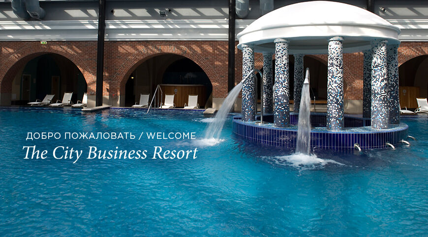
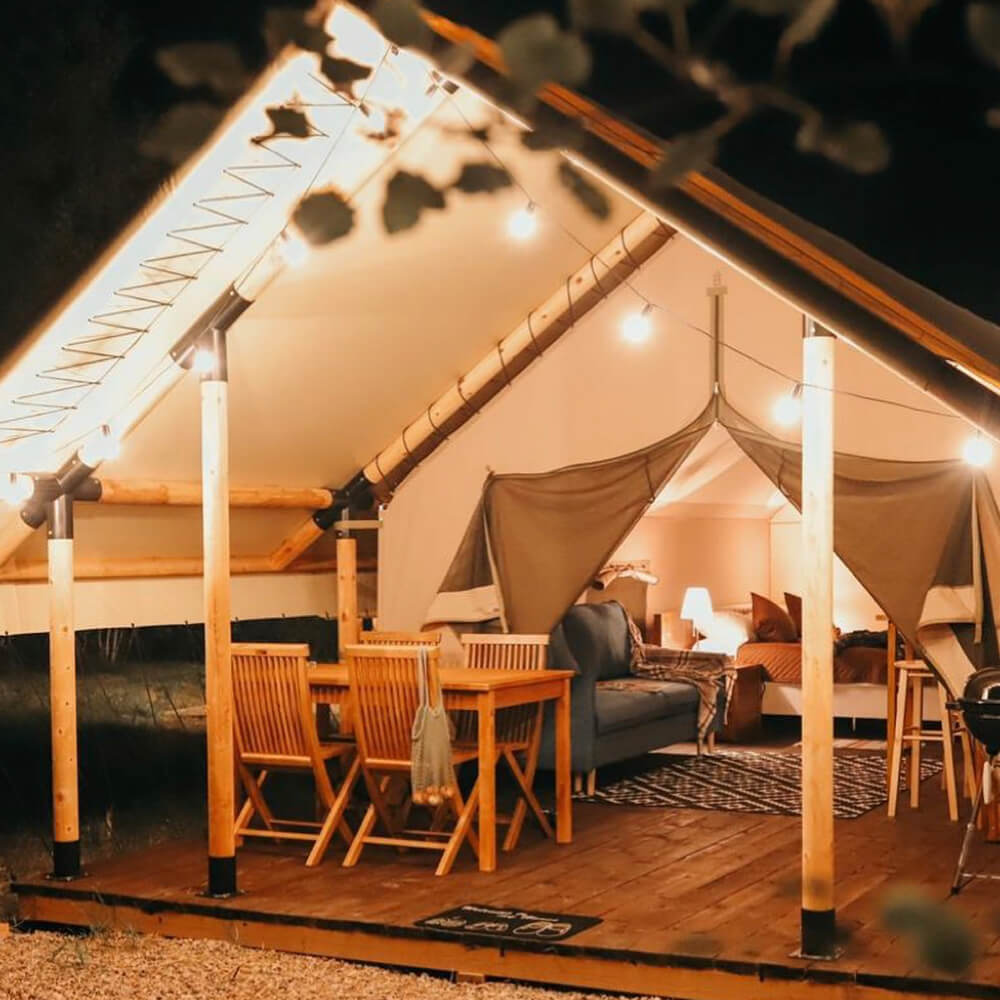
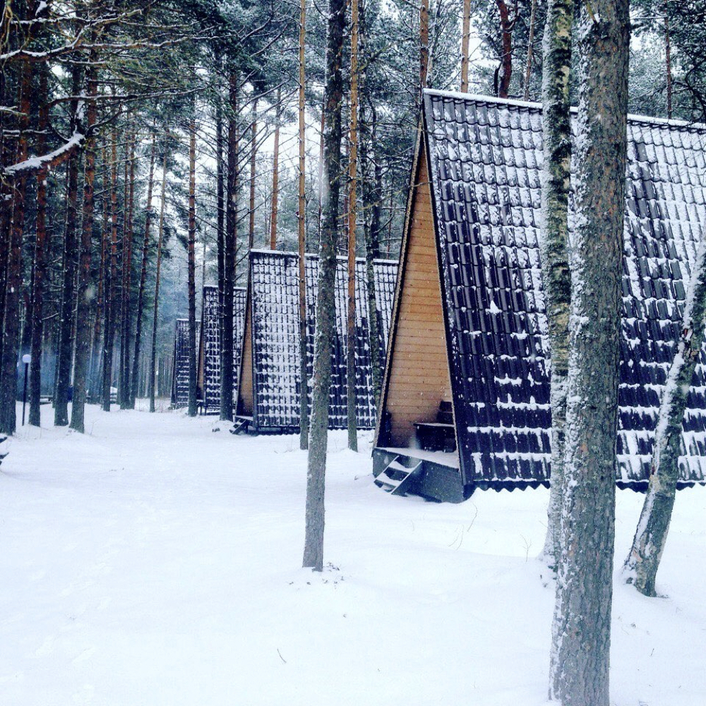
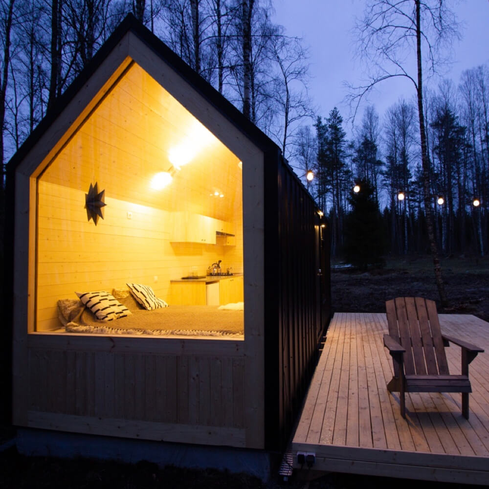
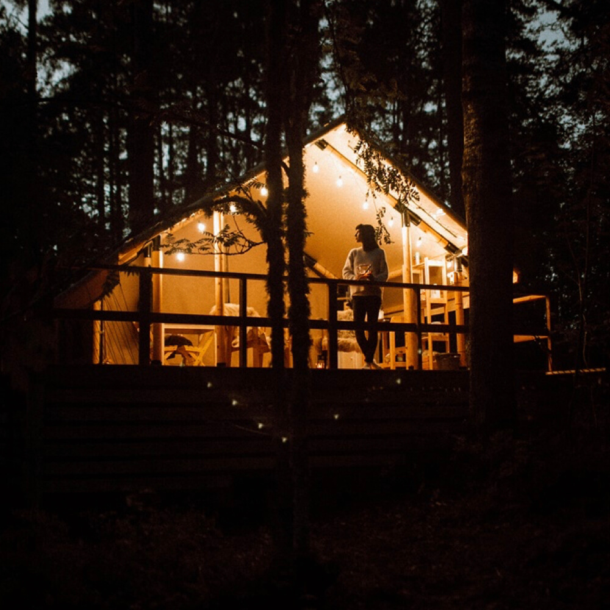
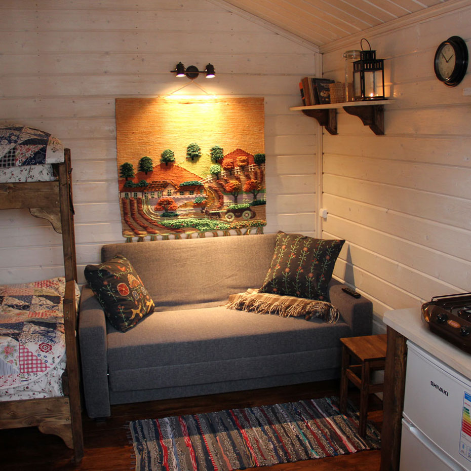
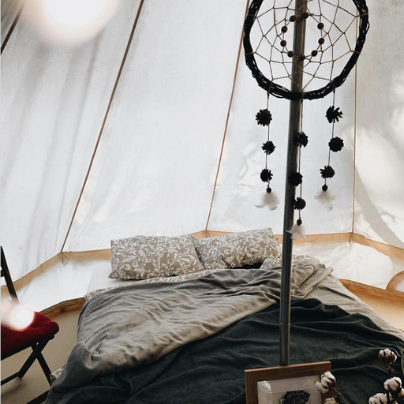

Привет, но ты проходишь мимо
Я спрятала улыбку
Ура! Этот праздничный день настал, и мы, наконец, готовы открыть завесу тайны. Пакуйте чемоданы, ведь вам предстоит отправиться в одно из необычных мест Санкт-Петербурга и Ленобласти! Мы подобрали для вас несколько вариантов отдыха, информацию
о которых вы найдёте ниже. Нажмите на кнопку "Хочу сюда!", чтобы сообщить нам о своём выборе. Сделать это можно в любой момент: через неделю, месяц или полгода. Запланируйте поездку в удобное для вас время (но будет здорово, если ваше
мини-путешествие состоится всё же в этом году). Мы надеемся, что эти дни вдали от привычной атмосферы города будут наполнены впечатлениями и приятными моментами! С любовью, наша команда по осуществлению классных сюрпризов, а именно
Антон, Анюта, Тёмик и Элла Николаевна

Solo Sokos Hotel Palace Bridge – уникальный отель формата «городской курорт», расположившийся в самом центре. Интерьер отеля сочетает в себе детали старинного здания и современные архитектурные решения в скандинавском стиле.

Круглогодичный глэмпинг A-GLAMP находится в 80 км от Санкт-Петербурга на берегу живописного озера. Здесь можно с комфортом наслаждаться красотой северной природы Карельского перешейка.

«Золотой берег» — это коттеджная база отдыха, расположенная в Приозерском районе, в месте, где река Бурная впадает в Ладожское озеро. Это тихое место на берегу Ладоги, где гости размещаются в деревянных бунгало в окружении
леса.

BOHO CAMP — это аутентичный глэмпинг, который спрятался от цивилизации среди заповедных лесов и озер на границе Ленинградской области и Карелии. Поселившись в уютных индейских типи, можно познакомиться с современным видом
экотуризма и насладиться удивительными пейзажами.

Карелия — это история про уединение, дикую природу, умение слушать тишину и наслаждаться моментом. А в уютных коттеджах «Матриярви», которые находятся на берегу одноименного озера в 220 км от Санкт-Петербурга, сделать это
очень просто.


База отдыха «Хутор Салокюля» в переводе с финского языка означает «лесная деревушка» и полностью оправдывает свое название. Отель находится в 220 км от Санкт-Петербурга, среди леса и скал, на самом берегу Ладоги.
Глэмпинг располагается на территории «Хутора Салокюля» и гармонично вписывается в природный ландшафт. Гости могут сходить в плавбаню, чтобы прямо из парилки нырнуть в реку, посетить мини-музей карельского быта, попробовать
натуральные фермерские продукты или отправиться за грибами и ягодами.

Глэмпинг «Хюгге Кэмп» располагается в окружении густого хвойного леса и чистого горного озера (или финского залива). И все здесь полностью оправдывает свое название: скандинавских странах слово «хюгге» обозначает спокойствие
и уют.